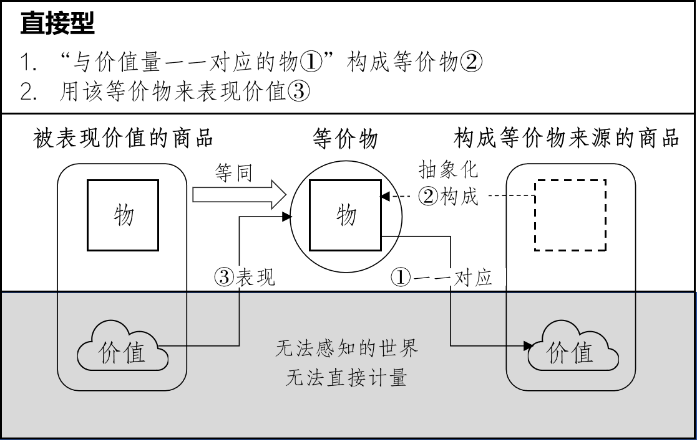
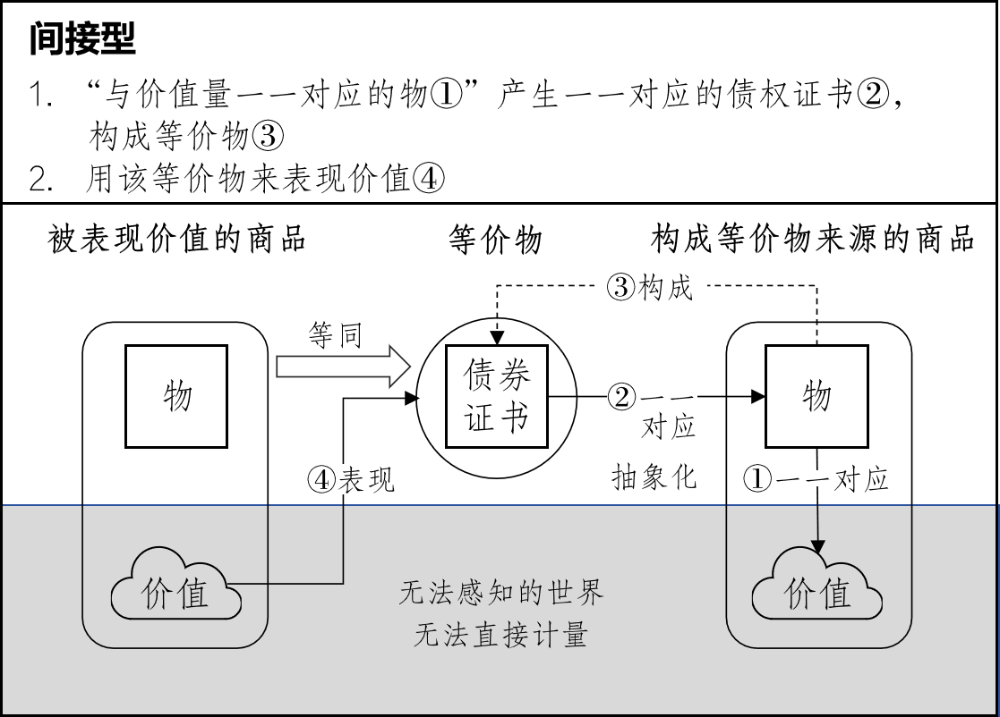
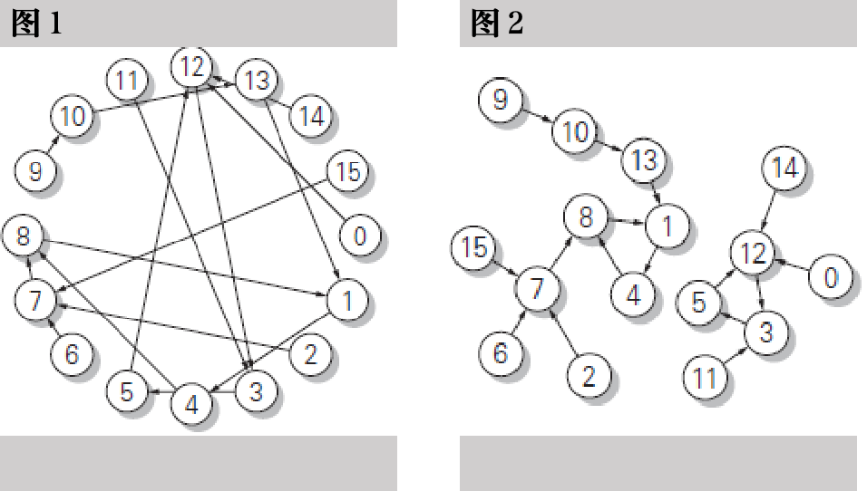
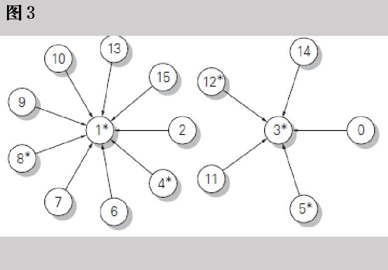

引言
在以往的马克思主义经济学中，关于货币，通常采用两段式的理论框架：首先将“金属货币”规定为本源货币，然后再将“信用货币”作为其派生物推导出来。然而最近，相继出现的一些年轻研究者的论文，开始重新审视这一基本框架。2它们的共同点在于，在从商品开始说明货币的第一阶段，试图同时并行地阐明“金属货币”和“信用货币”。
本文将考虑这种研究趋势，并试图探索一种能够抽象与整合不同类型货币的新理论。其基础命题是：“商品的集合会产生能够表现商品价值的货币（商品货币），而这种商品货币内部蕴含着向物品型和债权型变容的契机。”在下文中，（1）首先给出关于价值“存在”的严格定义；（2）其次，通过等价物概念明确看不见的价值“显象”意味着什么；（3）进一步确定作为价值表现基础的“商品集合”的定义。3（4）在这三个基础之上，引入追踪等价物链条的新方法，分析形成一般等价物所需的各种外部条件的关联；（5）沿着此处出现的“开口部”的分支结构，阐明抽象的商品货币演变为两种规范的可能性。
1 价值存在
物与物量
在经济学原理中，货币概念是通过明确商品的价值规定，并阐明该价值的量化表现形态而给出的。本文将这种从商品价值推导出的货币类型称为商品货币。4商品货币是从明确的定义和有限的前提中演绎构成的概念，是潜藏在肉眼可见的复杂货币现象深层的一般的抽象概念。要能够推导出商品货币，必须对商品概念进行严格定义。
商品的定义通过与“物（モノ）”的区别而明确给出。“物（モノ）”这个术语相当于传统上使用的“商品体”(Marx [1867]:50)，但因为这个词给无论是否是商品都保持不变的对象加上了“商品”这一修饰词，从而封死了将其从商品中独立开来作为其本身进行考察的途径。变更术语就是为了解开这一封印。
片假名的“物（モノ）”比指代超越知觉对象的“东西”（もの）要窄（例如“看不见的东西”），又比指代占据一定空间的物理实体“物体（有体物）”要宽，通常被用来广泛指代所有的知觉对象。在本文中，进一步将“物（モノ）”限定为具备以下性质的具有量的对象，并将这种物的量称为物量。
无论是作为连续量来测量，还是作为离散量来计数，均能作为数量被“衡量”（计量可能性）。
其数量可以相加（加算可能性）。
“量”分为即使能测量也不能直接相加的“内涵量”（如气温或速度），以及可以直接相加的“外延量”（如重量或长度）。5上述限定相当于将物（モノ）定义为具有外延量的对象。物量是外延的，但作为等价物发展形态的价格则是内涵的，不能直接相加。正如速度乘以时间变为距离后才能相加一样，价格也只有乘以物量化为金额后才能获得加算性。忽视这一点导致了平均价格和物价等概念的混乱，这是众所周知的事实。6另外，关于稍后所述的价值，我们要考虑的是连性质1都不具备的特殊量。在这里，牢记具有性质1和2的物量、仅具有性质1的价格（等价物）、既不具有性质1也不具有性质2的价值之间的相位差，将有助于后续的理解。
作为原点的商品
当作为客体的物（モノ）处于对其所有者完全无用、但对其他主体却有用的特殊状态时，这种物就被称为商品。如果将物提供给主体的有用性称为使用价值7，那么可以说，商品就是其使用价值完全变成了“为他人的使用价值”的物。正如该定义所示，商品是互为前提的，并非各自孤立的单独存在。商品从一开始就处于无数不特定主体和多种大量物交织而成的社会性“场”中。这个社会性的场被称为市场。
为了赋予商品以物量这一属性，需要加上以下限定。如果仅仅是“为他人的使用价值”，那么为了转卖而持有的绘画或古董等不可互换的（non-fungible）独一无二的物品也会被包含在商品中，但上述物定义中附加的计量加算可能性，与存在同种大量的商品且它们具有互换性（fungible）是同义的，因此在以下的考察中，除非特别说明，否则不适用“种”概念的独一无二的商品将被排除在外。
价值的内在性
既然商品的使用价值是为他人的，其反面即是：商品在市场这个共同的“场”中，具有与“所有”其他商品“潜在地”“等同”的性质。之所以说是“潜在地”，是因为相比于“A和B相同”则“B和A相同”这种“相同”所具有的可逆的绝对同一性，“等同”缺乏可逆性，仅停留在单向的相对同一性上。将商品彼此联系起来的“等同”关系，在这一意义上虽然是潜在的，但在能够针对任意其他（即“所有”）商品的一定量而成立这一意义上，则是“全面”的。这种全面的等置可能性被称为价值。
等置始终以一定的量关系为前提。不要将舍弃了量关系的（Marx [1867]:51）、相当于《资本论》中Gleichheit (Marx [1867]:73) 的“等同性”，与此处定义的“等置可能性”相混淆。此外还需注意，前文定义的“互换性”是“同种”商品内的关系，而“等置可能性”是“异种”商品间的关系。
这种等置可能性将发展为“买卖”。商品并不是与货币进行交换，更不用说与其他商品进行交换。商品是被买卖的。“买卖”是与互换x和y的可逆的“交换 (exchange)”处于对立面的不可逆关系。因此，本文也避免将价值与交换挂钩，将其定义为“可交换性”或“交换性”。这些也许看起来都是细微的差异，但请注意，“严格定义词汇并按照语法进行讲述”正是“使用自然语言进行逻辑思考”的体现。
在由具备同种大量性商品所构成的场中，价值是属于各个商品“种”的性质，即使是同种商品，它的价值也不属于被不同所有者主体所分割的个别商品。无论谁持有，只要混合在一起就无法区分的同种商品，都具有相同的价值。这种“具有”，与商品中“存在”价值是同义的，由于它是作为属性而“存在”，因此我们说价值内在（inherent）于商品之中。之所以需要建立有别于肉眼可见价格的价值概念，正是因为存在内在的价值。因此，对于缺乏互换性的独一无二的商品，特意设想一种有别于价格的价值是没有意义的。
价值的量
内在价值的量虽然无法直接衡量，但具有量的性质。让我们稍微思考一下伴随价值而来的“无法衡量的量”这种矛盾的修辞。根据定义，“物（モノ）”是可以衡量的对象。如果是“物象状态的量”（日本《计量法》第2条），就可以确定对任何人都共通的“单位”，并且如果能通过外形进行识别，就可以一个、两个地数出来。与此相对，价值没有自身固有的“单位”，也无法离散地计数。
只是商品的价值只要相应的物量确定了，也就唯一地确定了。物量具有加算性，如果物量变为两倍，与之相联系的价值量也会变为两倍。如果物量变为两倍、三倍，价值也许不会变为两倍、三倍——这种观点在此将被彻底抛弃。这种物量与价值量之间的比例性是公理公设，而不是从一定前提中推导出来的定理。这种公理公设被称为客观价值说，本文即立足于这一立场。
无法直接衡量的价值之所以具有量的性质，完全是由于这种与物量的一对一对应关系。因为可以还原为“抽象的人类劳动”，或者因为存在“社会平均必要劳动”，或者因为通过价格私人劳动被“视作”“社会劳动”等等，切勿将这种把价值量与劳动量联系起来进行说明的劳动价值说与客观价值说相混淆。
2 价值表现
表现与现象
内在的商品价值的存在，是无法通过知觉来感知的。只有当它被表现为另一种形态（Form）时，才能为人所知。如果“表现”这个术语会让人不必要地联想到主体积极的“表达”行为，那么最好避开它，代之以意为“自行显现”的“现象”一词。内在的价值必然会作为可衡量的量而现象化（显现）。
表现=现象意味着存在于不可感知世界的“某物”，自然而然地在可感知世界中“显现”，它成为一种将不可感知的对象与可感知的对象联系起来的先验概念。在这种情况下，“某物”并不是独立于现象而先于现象存在的。不存在没有影子的“某物”，也不会出现影子有时产生、有时不产生的情况。“某物”与影子是不可分割的。价值就是“某物”，而这个“某物”同时就是“显现”出来的。价值并不“实际存在(existieren)”一种不伴随现象、无论何时何地都不变的“共同的实体(die gemeinschaftliche Substanz)” (Marx [1867]: 74)。价值并不具备“实体”与“形态”这两个可分离的属性，相反，不可感知的价值总是与可感知的价值形态形成不可分割的对偶而显现(erscheinen)。因此，本文不使用只会与价值存在和价值表现的同时性产生冲突并引发混乱的“实体”这种冗余词。价值的表现方式，即价值的现象形态，简称价值形态，在下文中“形态” (Form) 一词将严格限定在这一意义上使用，而不采用作为“实体”反义词的“形态”用法。
作为构成体的等价物
在价值表现方式即现象形态中，最重要的是“等同”这一概念，它必然需要“等同物”即等价物 (equivalent) 的存在。尽管商品的价值通过与物量的一一对应而具有量的属性，但它属于不可感知的世界，没有自身的单位，也无法直接相加。其价值的展现形式为：
从某个任意商品中“制造出”等价物；
认定为与该等价物“等同”。
等价物本身是物（モノ），但由于这种物同时处于商品状态，根据前述的客观价值说，它与其价值具有唯一对应的联系。
重要的是，商品本身既“不是”等价物，也没有直接“成为”等价物，而是将商品的物量和价值暂时剥离，再按照一定规则重新结合，从而形成为从商品中“制造出来的”独特构成体。让我们更详细地探讨这一点。
一般而言，“x等同于R”指的是选择一个能直接体现x属性的R，即“x是R” (x is R)。例如，当我们说“她是一朵玫瑰花”时，x和R显然属于不同的世界、不同的维度。因此，即使x is R，R is x即“玫瑰花是她”也是没有意义的。被认为等同的“玫瑰花”是为了表现她的美丽，通过联想各种各样的玫瑰花 {r0, r1, …} 创造出来的美的典型或观念R，而不是这朵或那朵实际的玫瑰花{r0, r1, …}。在这个意义上，与“她像一朵玫瑰花”相比，“她是一朵玫瑰花”这句话中，“玫瑰花”的抽象程度明显提升了一个层次。
在价值表现中的等价物上，这种抽象化与一般的比喻表现相比被推到了极致。物（モノ）对人具有各种有用性、使用价值，如吃起来美味、穿起来保暖等。必须完全舍弃这些有用性，将其变成无论何时何地、对任何人来说都相同的纯粹的物的量。这种被纯化的物量在某个商品内部与价值量唯一对应，由此“构成”了能够表现其他商品价值的等价物。价值没有单位，但这样构成的等价物作为物量则拥有简单明了的单位。
将价值表现形态理解为“寻求交换的形态”，会模糊等价物是有别于实体商品的独特构成体这一事实。等价物作为交换的对象变为了实体商品，从而使价值形态论的焦点转移到“哪个商品被选为等价物”的选择上。从这个意义上讲，也有必要从价值的定义中彻底剔除“交换”一词。
复数的构成法
既然已经明确等价物是独特的构成体，就能看出其构成方式并非只有一种。只是它实际会呈现出何种方式，在此阶段尚无法在理论上唯一确定。可以肯定的是一个“不是单一方式”的否定命题，目前能做到的只是分析构成等价物的各项要素，并指出相应组合的分支方向。作为可能的分支，在这里，我们将针对以往普遍设想的直接型，探讨一种可称为间接型的另一种构成方式。直接型是指从处于特定商品状态的物（モノ）中构成等价物的方式，而间接型则是从代表对同样处于特定商品状态的物的请求权的证书（债权证书=债务证书）中构成等价物的方式。

直接型等价物构成

间接型等价物构成
在间接型的情况下，关键要注意请求权的对象是物（モノ）而不是商品。一听到债务证书，经济学家往往会自然地联想到金钱债务证书。延期付款购买时发行的债务证书，当然是金钱债务证书。《资本论》中“支付手段”部分出现的“信用货币”(Marx [1867]: 154)也是金钱债务证书。然而，受这种联想影响，如果试图在这个阶段从商品买卖中说明债务证书的产生，就必然会陷入以货币存在为前提来解释货币的循环论。更何况，如果粗率地认为金钱债务证书是由货币的借贷产生的，就会走向利息该如何解释等偏离主题的歧途，并为自找的矛盾而烦恼。法律上的债权（claim）是一个广义的概念，“即使不能以金钱估价的对象，也可以作为债权的标的”（日本《民法》第399条）。它不仅限于金钱或物品，还包括提供劳务或实现承包业务等向他人请求给付的权利（Right in Personam），与针对所有物的权利即物权（Right in Rem）相对。当然，这里考虑的债权并不是这种广泛的债权一般。构成等价物的债权的对象可能是什么，这才是需要解答的问题。
在演绎推论中，必须时刻牢记什么已被定义，什么已被证明。目前给定的只有关于物（モノ）和商品的基本定义以及几个辅助命题，我们正处于试图基于这些来证明与货币存在相关的核心命题的抽象阶段。因此，第一，构成等价物的债权不可能是以货币存在为前提的金钱债务证书，这是显而易见的。第二，将债权的给付对象设定为商品本身，也违背了前文等价物是“从”商品“制造出来的”构成体这一规定。本来，借贷的对象要么是“金钱”要么是“物品”。“商品”的借贷只有在对商品期货买卖进行独特解释的情况下勉强算作一种特殊状态（小幡 [2009]: 302），而期货交易是派生于交易所现货买卖的、以货币存在为前提的规定。因此，在逻辑上，构成等价物的债权既不是针对货币也不是针对商品，而是被限定为以物（モノ）为给付对象的种类债权（fungible claim8）。
另外，这里在债权债务上加上“证书”，是因为债权债务关系仅具有针对特定人的所谓“相对效力”，而构成等价物需要一种能向不特定人公开其内容的形式，除此之外并没有更深的含义。无论是印在纸上还是记录在磁性介质上，在如此抽象的理论层面，这些形式差异并不构成问题，这点也需注意。重要的是“对物的请求权，可以在商品买卖之前，相对独立地存在”这一抽象的一般命题。
这种针对物（モノ）的债权证书之所以能成为等价物，当然是因为该物同时处于商品状态。只是不能将“债权所指向的是物，同时处于商品的状态”与“债券权所指向的是商品”混为一谈。将物称为商品体的《资本论》用语容易引发这种混淆，因此在前文废弃了。如果忽视了这两句话的区别，就无法区分直接型和间接型。
再次强调，理解间接型的关键在于，请求权的对象是物。由于债权证书指向的物处于商品状态，即使债权证书外在于商品，也可以通过“债权证书→物量∷物量→价值量”的形式，使证书上明记的物量与价值量产生间接的一一对应关系。因此，关于等价物的构成，除了从物本身构成等价物的直接型之外，还可以考虑另一种从针对物的债权证书构成等价物的间接型。
等价物的抽象性
如前所述，既然等价物是使物（モノ）与价值唯一对应的构成体，就必须从商品中舍去所有者或有用性等因素，仅提取出物并进行唯一关联。在直接型和间接型中，这种抽象化存在差异。在直接型中，舍去物各项属性的操作是在每次价值表现时进行的。例如“20码麻布=1件上衣”时，哪怕眼前的正是“这1件上衣”，也必须将“这”标准化为对任何人通用的内容，并客观化使得“件”这个单位随时随地都适用。这意味着它需要被抽象为物作为同种类的互换性（fungibility），而无论谁持有，它都不依附于人。在直接型中，这种等价物的构成不可或缺地与抽象化与等置同时发生，因而存在着物本身与被抽象化后的等价物未能彻底分离的风险。相对而言，在债务证书中，“这1件”的内容在价值表现之前就已实现，并作为记录在纸片或磁性介质上的文字和数字一目了然。在将物抽象为等价物的方式上，这两种类型形成了对比。
仅就这一点来看，在等价物的构成法上，间接型似乎优于直接型，但也有相反的一面。债权债务从根本上讲是对人的权利。如果要将债权证书作为等价物，必须舍去这种人身关系。它要求将债权不是与作为债务人的“人”相连，而是与其所有的“物”相连，也就是所谓的物权化。进而，为了确保任何人只要持有该债权证书就能提出请求，必须赋予证书匿名性。这种匿名性并非债权债务天然具备的属性。在这个意义上，间接型需要有别于直接型的独立的制度性补充。
等价物作为构成体，其构成法分为直接型和间接型这种对偶性，也被以此等价物为基础而说明的商品货币所继承。如后文所述，商品货币之所以演化成物品型和债权型这两种不同类型的规格，其深层原因正潜藏于此。
3 价值形态的基底
商品集合
到此为止我们能够确认以下几点：
同种商品虽然无法直接衡量，但其内在拥有特定大小的同一价值。
商品价值是通过构成使物量与价值量一一对应的等价物来表现的。
等价物的构成方法不只限于一种。
由此可见，价值表现的主语是商品种。成问题的是种与种之间的关系，因此所有者的问题被舍去了。需要阐明的是一旦混合便无法区分的同种大量亚麻布或上衣等之间的关系，在目前的抽象层面，这些亚麻布或上衣由谁持有无关紧要。
这一点是本文基本构思的重要切入点，但为防止读者一时难以理解，需补充说明。构成障碍的是一个暗含的前提：被表现的是所有者拥有的特定部分商品的价值，以及将商品视作“个”而非“种”的固有观念。人们倾向于认为，“20码亚麻布=1件上衣”是亚麻布所有者A所持亚麻布的价值表现，而在另一个所有者B那里，完全可以是“10码亚麻布=5磅茶”。如果将价值形态视为“寻求交换的形态”，那么即便是同种商品，根据寻求交换的主体不同，其价值表现也会七零八落。然而，被表现的价值本来就是种的属性，出发点应是以商品种为要素的商品集合。无论有多少个亚麻布所有者，作为集合要素的亚麻布只有一个。货币便产生于这种商品集合所具备的独特结构中。9
这一主张似乎与近年来重视商品所有者角色的研究趋势背道而驰。然而，这只是表象。相反，通过分析商品集合，首先明确商品所有者所处之“场”的结构，才能初次理解各个主体所发挥的真正作用。以往试图从寻求交换的商品所有者视角来解释货币生成的尝试，其实是对商品所有者抱有过度的期待。
分化发生论与价值形态
为什么说这是过度的期待呢，让我们再回顾一下其背景。事情的起因可以追溯到20世纪70年代信用论中分化发生论的抬头。20世纪50年代问世的宇野弘藏的《经济原论》废除了《资本论》中货币资本家与职能资本家的区别，开辟了从产业资本间形成的商业信用推导银行信用的路径，而到了60年代，以铃木鸿一郎编著的《经济学原理论》为代表，则更进一步，增加了为了响应利润率平均化的要求，银行业资本从产业资本内部产生的说明。
话虽如此，并非只要有利润率平均化的要求，银行业资本就会自动产生。平均化是无意间形成的结果，从追求利润率最大化的个别资本的观点来看，开始出现了必须演绎地论证其独立依据的批评。这种对要求论的批评，作为一种“个别产业资本内部的要素通过围绕利润率的竞争而向外部独立”的分化发生论，在70年代日高普的《经济原论》和80年代山口重克的《经济原论讲义》中结出了硕果。
在这种趋势中，分化发生论的方法同时从其原本的领域——信用论和商业资本论，扩展到了更为基础的商品·货币·资本领域。这种基础，在宇野弘藏的《经济原论》将商品所有者的存在引入价值形态论时就已准备妥当。在这种基础上移植分化发生论，试图通过专心追求私人利益（此时还不能使用“利润”这一概念）的经济主体的行动来解释货币生成的尝试开始零星出现。将价值形态重新理解为“寻求交换的形态”（小幡[1988]）的立场可以被视为这种做法的先锋。
然而，货币的生成是否应当用分化发生论的框架来理解呢？现在回想起来，这其中潜藏着不合理之处。本来分化发生论始终是以个别产业资本的利润率规定为前提，去探寻其内部要素分离并独立的派生关系，它无法解释作为前提的利润率概念本身。个别资本只有在利润率支配的“场”中才能自由行动，并不能亲自创造出竞争的“场”。货币也绝不是因寻求交换的个别主体的行动而产生的。是商品这种物（モノ）的特殊存在方式，生成了货币存在的“场”。
只有当准备好了存在商品库存和货币的市场这个“场”时，个别主体才能充分发挥其作用。诚然，要分析商品销售耗时且价格向下分散的市场特性，引入个别主体是必不可少的。但是，“个别主体对在‘场’中产生的各种现象起决定性作用”和“个别主体拥有自身创造出活动‘场’的力量”，完全是两码事。个别主体终究是受限于特定“场”的存在。并不是因为人们说话才产生了语法，而是因为有了语法人们才能说话。主体的这种受限性，无论在信用论还是在价值形态论中都不会改变。说这是过度的期待，原因就在于试图让商品所有者去承担生成其自身活动之“场”的责任。
扩大的价值形态的摒弃
如果将推论的出发点定为商品集合，“扩大的价值形态”自然就变得不必要了。等价物的扩大，可以有两层理解：①视为以and排列，或者②视为以or排列。让我们分别探讨其不必要的理由。
第①种同时并存说可以理解为，特定商品（如亚麻布）的所有者列举出自己不仅想要上衣，还想要茶和糖的情况。在这种情况下，因为个别主体持有的亚麻布数量有限，所有的商品种不可能都被网罗进等价物中。有限的等价物组合由商品所有者自行选择。这导致即便是同种的亚麻布，也会根据持有者的不同而存在不同的价值形态，这就偏离了作为种属性的价值表现的本义。
如果进一步推演这一观点，假设各个商品所有者将扩大的等价物按照从紧急性高的日用品到作为盈余的奢侈品进行排序。那么排名靠前的商品种会体现出反映各自情况的差异，但越往下越会被限定在少数奢侈品商品上，末端就会出现一个共同的等价物。通过这样的程序，似乎能够构想出一种提取一般等价物的方法。但这只不过是预设了金属货币的存在、借由看似合理的“故事”和“寓言”进行的“说服”，很难称之为基于“理论”的“论证”。更何况，认为商品所有者理应拥有多种商品，从而在相对价值形态一侧放置多种商品的组合或合成商品，完全丧失了表现内在种之商品价值的本义。无论如何，①与商品所有者的视角绑定在一起，从而导致货币的概念也偏离了“内在价值的表现”，变为了“间接交换的媒介物”。
第②种选择性并列说的情况又如何呢？在表现一定量商品的价值时，以and形式将其等价物扩大为“上衣和茶和糖和……”确实有其局限，但如果是or形式的“上衣或茶或糖或……”，则可以枚举“所有”的商品。《资本论》就属于这种情况。如果全商品种都能被网罗进等价物中，把价值表现看作一种等式并将两边倒转，就可以构想出一种一举推导出一般等价物的方法。
然而，在这种情况下，找不到任何决定究竟将哪个商品种进行倒转的原理。倒转论在这一点上存在致命缺陷。为了克服它，人们才像①那样引入商品所有者，探索不依靠倒转来缩小一般等价物范围的方法。但是，正如前文所述，那样做会让所有者的“个”优先于商品的“种”，结果将价值表现扭曲为了交换方式。问题不在于“倒转”，而在于“扩大”。未曾怀疑过“扩大”这一理念本身，正是绊倒人的根源。
“扩大”究竟问题出在哪？诚然，如果将等价物扩大至全商品种，这就和“与‘所有’商品等同”这一价值定义相吻合。但是，这个“所有”是“潜在地”，而并非“同时地”。在某一时刻的价值，只能以“其中任意”一个作为等价物表现出来。无视“潜在地”这一制约而扩大等价物，就是在一个要素内提前读取整体，这切断了从要素间关系解析整体结构的道路。这就是问题所在。正确的出发点应该是：相互平等的商品种集合，各自以其他任意一个商品种作为等价物来表现其价值，通过分析这一商品集合的结构并提取等价物统一的各项契机，才是正确的方法。
4 价值形态的展开
价值形态的锁链
因为所有的商品都是用由其他特定某一商品构成的等价物来表现其价值，所以假设商品集合为 A = {a1, a2, …, an}，“等同”这一关系就可以用映射φ: A→A来表示。不过，与自身“等同”的关系虽然正确，但不能作为价值的表现，因此在 ai ⟼ aj 中 i≠j。并且假设商品集合是有限的。如果加入时间的契机，商品的种类也许会无限增加，但在特定的某一时刻，其数量再多也是有上限的。进一步，假设等价物的等价物仍是自身的等价物这一传递律：
ai ⟼ aj ∧ aj ⟼ ak ⟹ ai ⟼ ak
最后一点需要进行补充的是，由商品集合中各要素进行的价值表现ai⟼ aj，全都是将其价值——“虽为潜在，但可与所有商品等置”——通过某个任意的等价物表现出来的，在这一点上，它潜藏着一种以该价值为共同基底，并将其与“潜在的全体”联系起来的性质。为了揭示这种隐藏的联系，可以考虑几种方法，但“等价物的等价物也是等价物”这一传递律是最容易处理的。正是在这个意义上，本文采用了这一假设，且必须声明，传递律相当于公理公设，并非从某个前提推导出来的定理。
在φ(A) 的要素中，可能存在不被任何其他商品作为等价物的商品，因此φ(A) 是 A 的子集，一般情况下，该映射既非满射也非单射。不过，如果重复进行这一映射并探索等价物链，最终会出现φ 变为双射的子集。这样，商品集合A的结构就浮现出来了。
至此，所需的基础已构建完毕。接下来的内容将是形式上的结构分析，因此我将简要展示其手法。
等价物的锁链
商品集合A的结构相对容易看透。它呈现出带有粗干的树木枝杈的形状。不被任何商品等置的商品位于细枝末端，这些细枝汇集成大枝，再汇集为更粗的枝干，最后抵达主干。并且这个主干形成了一个循环（cycle）。所谓循环，是指ai⟼ aj, aj⟼ ak,…,az⟼ ai 这样一条无论从哪里出发都会回到原点的闭合连链。包含两个要素的链也算作循环。
示例：用16种商品进行确认。给各商品种从0编号到15，假设它们依次将 12, 4, 7, 5, 8, 12, 7, 8, 1, 10, 13, 3, 3, 1, 12, 7 作为等价物。将这种映射关系φ图示出来，就成了图1的样子，解开等价物链，则会浮现出如图2所示的结构。

图1：映射关系 φ 的图示 / 图2：等价物链的树状结构
在此例中，对商品集合A0 = {0, 1, …, 15}重复执行3次φ映射后得到A3 = {1, 4, 8, 3, 5, 12}，之后无论再重复映射多少次，都会保持A3 = A4 = …不变。因为A3 由 C1 = {1, 4, 8} 和 C2 = {3, 5, 12}这两个不相交的子集组成，且C1, C2在映射下构成了等价类。
若使用随机数互换等价物数组的元素，左图每次都会改变形状。并且，如果增大数组的大小，就会出现犹如旋转万花筒般复杂多样的图案。然而，贯穿其中，一般会成立以下定理：
定理：如果商品集合A是有限的，则至少存在一个循环。
证明：假设不存在循环。从不被其他商品作为等价物的商品出发，依次追踪等价物链。如果碰到已经追踪过的链要素则结束。位于这条链末端的商品也必须以某一商品作为等价物，且该等价物不能是商品集合A的要素。这与商品集合A是有限的产生矛盾。故，至少存在一个循环。
该定理并不排除存在多个循环的情况。如果商品种类增加且商品集合A的大小增大，循环数是否也会随之增加？还是只停留在少数？不妨试将商品种类的数量增至16、64、256、512、1024，并利用随机数对等价物排列变化100次，统计循环数量，得到了以下结果10。
| 商品种的数量 | 循环数量 | ||||||
|---|---|---|---|---|---|---|---|
| 1 | 2 | 3 | 4 | 5 | 6 | 7 | |
| 16 | 64 | 33 | 3 | — | — | — | — |
| 64 | 42 | 35 | 16 | 2 | — | — | — |
| 256 | 17 | 39 | 28 | 12 | 4 | — | — |
| 512 | 21 | 28 | 26 | 17 | 7 | 1 | — |
| 1024 | 12 | 17 | 31 | 23 | 11 | 5 | 1 |
在100次试验中，循环数量的分布仍有很大波动，但大致能观察到以下几点。循环数量的最大值是商品种的数量除以2所得的商，所以会成比例地增至8, 32, 128, 256, 512，但实际的循环数量，在方差略微扩大的情况下，其中位数仅发生1, 1, 2, 2, 3的微小偏移。循环数量的分布显著偏向较小值的一侧，这表明商品集合具有围绕极少数循环聚集的性质。在各商品之间，发挥着将等价物进行统合的强劲内力。
循环的构成要素与连接要素
商品集合A的要素要么是某个循环的构成要素，要么是连接到该循环的连接要素。因此，所有要素都可以根据循环毫无遗漏地进行分类。
由于一般假设了传递律，对于某个循环构成要素的集合 C = {c1, c2, …, cn}，对于任意的 k, l，通过循环始终能使得如下的对称律成立：ck ⟼ cl ⟹ cl ⟼ ck。作为价值表现而言虽无意义，但由于ck ⟼ ck也始终为真，因此循环构成要素的集合C满足自反律、对称律、传递律，构成了代数中所说的等价关系 ck ∽ cl。所以可以说，C中的任何要素都可以凭借相同的资格成为共同的等价物，也可以说，存在能以一代表全体的要素。
构成与集合C中某要素c相连的单根枝条的连接要素集合 B = {b1, b2, …, bk}，通过传递律，对所有i=1, 2, …, k均有bi ⟼ c 成立。即，所有循环连接要素的商品都会被直接等置于同一个等价物。
循环的构成要素与连接要素
循环的构成要素具有等价关系，因此可以用其中任意一个要素来代表。如果把这个代表要素称为准一般等价物，那么商品集合就可以被分类为以与循环数量相等的准一般等价物为中心的枢纽（Hub）状表现系统。例如，如果在前例中将准一般等价物设定为1和3，就会形成如图3所示的两个表现系统。中心准一般等价物的位置可以由打上号的要素以对等的资格来担任。

图3：以准一般等价物为中心的两个表现系统
外力的要求
到此为止的内容，可以概括如下：
价值表现通过等价物链，生成以循环为中心的、单一的或少数几个、互不重叠的表现系统。
循环构成要素的代表，无法仅凭生成表现系统的内在条件来演绎决定。
在产生多个表现系统的情况下，它们的统一，也无法仅凭生成表现系统的内在条件来演绎决定。
由此可知，所有的商品若要拥有单一共同的等价物（即一般等价物），需要两种外部条件。其一是决定构成循环之等价类的代表的条件；其二是分化为多个表现系统时，将其统一起来的条件。通过这些，图3中的两个表现系统就能变成以一般等价物为中心的单一枢纽（Hub）结构。
以上终究是在“所有的商品种都利用其他任意的商品种构成等价物，以表现自身价值”的设想下演绎出的结论。因此，如果对这一设想加以修改，结论也会随之有所改变。但是，只要不打破“商品具有价值（价值存在）且其价值由等价物来表现（价值表现）”这个大框架，“商品的价值表现具备缩小等价物范围的强劲内力，但一般等价物的生成还需要独特的外部力量”，这一基本命题便不会动摇。
5 变容的结构
定义与要求
对上述基本命题进行些许方法论上的反思。正如欧几里得几何学中点或线的定义要求借用画在纸上的“点”和“线”的意象那样，通常抽象的定义会“要求”其蕴含的某种表现现象。“潜在地、全面地具备等置可能性”这一商品价值定义，在此意义上就“要求”了一般等价物的存在。
必须对“要求”这个术语加以注意。因为跳过逻辑推论，仅凭“要求”就去说明表现现象的实际存在，这样的危险往往会发生。我们在“分化发生论与价值形态”一节中，我们已经批判这种解释为“要求论”（先验设定论）的形式，以及“分化发生论”是如何抬头的。关键在于，包含在定义中的“要求”（理论要求/设定），与能够通过逻辑推论加以解释的现象之间，存在着鸿沟（gap）。就本文而言，就是将图3的两个表现系统进一步统一的单一枢纽（hub）结构，与图2之间的鸿沟。
如果我们一般地将这种鸿沟称为原理中的“开口部”，那么试图仅凭“要求”来填补这整个开口部的，正是“要求论”。然而，与此相对，如果认为仅凭基于“追求利益”这一单纯行为原理的个别经济主体的行动就能填补一切，那就成了过度的“分化发生论”。话虽如此，反过来说，如果退缩到认为“在原理中只需讨论能被填补的范围即可”，这应该被称为一种放弃了理论上可以思考的问题的、消极的（向后看的）分化发生论。这种进退两难的困境，可以通过理清“场”（场域/结构环境）与主体的关系来克服。
需要重复的是，个别经济主体终究只能在给定的状况（即利益可以被量化表现的“场”）中自由行动，而不可能自行创造出作为其行动前提的“场”。商品所有者，是先有了货币存在的“场”，然后才能采取行动，而不是先有主体的行动才产生出货币。这种“场”的存在，已经被抽象地内含在了商品价值的定义之中。通过探寻一种方法，去考察先于主体行为原理、且超越了主体的关于“场”的“要求”，我们就能够跨越分化发生论的局限。
规范与实现
只不过，“要求（理论要求/设定）”这个词，总是不可避免地让人联想到那种已被判定为错误的“要求论”。在这个意义上，或许避开这个词汇，换一种解释方式会更好：例如，我们可以说，抽象的定义仅仅是规定了它所必须满足的最低限度的“规范”，至于具体通过何种方式来“实现”它，则是具有一定自由度的。这样做的话，就能明确地表示：响应理论设定的方式并非只有单一的一种，通过不同的方式也完全可以产生相同的效果。这与现代面向对象（Object-Oriented）的编程语言中的机制是相通的——在面向对象的编程中，首先会将必须满足的属性和必要的方法汇总起来，定义为一个“父类（基类）”，然后在这个类的“子类（继承类）”中，设法去完成具体的代码实现。经济学的“原理论”也有必要像这样，将“规范”与“实现”的层级（Layer）区分开来，使复杂的理论结构内部实现多层化。
一听到“要求”这个词，就立刻先入为主地认定它是陈旧老套的逻辑，这本身也是一种陈旧的教条。真正重要的是，要正面直视“开口部”的存在，并充分运用演绎推理对其内部结构进行精密的分析。如果我们对“资本主义是会发生演变（变化）的”这一事实感兴趣，并试图从理论上把握其内在机制，自然就会走向这样的方法论。这就是“变容论的路径”。
填补开口部的方法
迄今已明确的开口部内部结构可概括为以下问题群：
决定等价物构成法中的直接型或间接型（直接/间接问题）
形成一般等价物过程中的：
(a) 循环构成要素的代表决定（代表问题）
(b) 多个表现系统的单一化（统一问题）
我们应当以怎样的步骤来解决这三个问题呢？需要先确认一下问题的结构。其中，“直接/间接问题”和“代表问题”只要是多种大量商品以任意商品作为等价物表现价值，就必然会产生，相对而言，“统一问题”则可发生也可不发生。在这一意义上，可将“直接/间接问题”和“代表问题”划分为“主要问题”，将“统一问题”划分为“次要问题”。关键在于，究竟应该先解决主要问题还是先解决次要问题。
马上能想到的是这样一种步骤：首先解次要问题，消除存在多个表现系统的状态，将其整理为单一表现系统后，再去解主要问题。例如，取某表现系统Q的循环构成要素之一，将其等价物更改为另一表现系统P的一个要素（未必非要是循环构成要素不可），那么Q的所有构成要素都会被吸收进P的循环连接要素中。以图3为例，如果仅将14的一处重新替换为指向1，左侧的表现系统就会被吸收进以 {3,5,12} 这一等价类为中心的右侧表现系统中。如果对所有表现系统都施加这种操作，就能平整为单一的表现系统。
先解决次要问题再着手处理主要问题，这一步骤乍看之下似乎很合理，但稍加思索就会发现它有着重大缺陷。因为将可能会发生的问题置于优先，这就等同于将外部力量置于生成一般等价物的内部力量之上。在无数价值表现中，尽管看似不过是调换了一个等价物，但只要对形成循环的内力直接加以干涉，就会破坏一般等价物形成的内部条件。作用于开口部的外力，不应是这种由于直接介入造成的修正，而必须将其局限为：以内部力量所形成的分歧为前提，在外部对其选择方向进行辅助的作用。外在条件的追加，应在不影响内在条件的范围内进行。如果不严守这个规则，核心理论的基础会瞬间瓦解。基于上述理由，这里的考察步骤将是：首先解决主要问题，然后在依然遗留可能性的情况下去解决次要问题。
直接型·间接型与代表的决定
解决主要问题的要点在于，“直接/间接问题”和“代表问题”这两者究竟是合为一体去解，还是各自独立去解？换言之，“直接/间接问题”顾名思义是直接型与间接型的二选一原理，那么代表问题中是否也能想到与之对应的不同的决定原理？从这一视角重新审视“循环构成要素与连接要素”一节中所规定的准一般等价物，可以发现，在其中依然能认出存在的两种方式。
其中一种是“择一型”方式，即从循环的构成要素集合 C = {c1, c2, …, cn}中，抽取出任何一个要素来构成准一般等价物。另一种是“包容型”方式，它像百搭牌一样，能与集合C中任意要素被等置，借此构成准一般等价物。在择一型中，C的要素内会有n-1个通过准一般等价物进行价值表现；但在包容型中，C的所有n个要素都将通过该等价物e进行价值表现，故不会发生作为择一型特征的“将特定商品从商品集合中排除出去”的情况。图3左侧的表现系统，是将商品1作为准一般等价物的择一型，但在包容型中，中间会放置一个等价物e，{1, 4, 8} 所有要素都将借由这个准一般等价物来进行价值表现。
如果代表问题存在择一型和包容型这两种解答，便可以立刻明白它对应于“直接/间接问题”中的直接型和间接型。若将以特定商品为基础构成等价物的直接型运用到代表问题上，就变成了从循环中抽取出特定商品作为准一般等价物的择一型。若要构成能与多个商品均可等置的准一般等价物e，不可或缺的是一种包容性的债权债务证书——它不仅能以对应于c1的物来清偿，也能以对应于c2的物来清偿。以此，在准一般等价物的形成上，可以观察到“直接型+择一型”和“间接型+包容型”这两条分歧。
复数的表现系统
即使主要问题得以解决，依然有可能发生多个表现系统与多个准一般等价物并存的情况，这就留下了“它们究竟如何统一成单一的一般等价物？”的问题。对此，暂且可以构想如下解答。如同对商品集合A设想等价物的映射φ一样，对于由准一般等价物构成的集合E = {e1, e2, …, ek}，引入新的等价物映射φ。由于φ(E)的大小比φ(A)小，其内部发生多个循环的概率也会降低，反复进行此操作，该值将趋近于零。这就是统一问题形式解的候选方案。
可是，实质性问题在于下述几点。如前所述，循环的数量，只需在映射φ中重新替换一处等价物，就会随之增减，是一种浮动状态。即便针对A的某个映射φ实现了表现系统的单一化，那也仅仅体现了在特定时刻共时性存在的一般等价物而已。假如在下一瞬间转为另一种映射φ’，那么在时间流逝的过程中，等价物链的模式将会像旋转万花筒般发生改变，循环数也将产生变动。
可是，实际当中并未见到此种变化。共时性的分解照片的合成，并无法构成历时性的影像。因为只要一旦形成了一般等价物，出于下节所述的原因，它就会产生独特的持续性。在一般等价物的惯性压制下，多重表现系统统一的问题也就不会浮上水面。只不过在其水面之下，时刻潜伏着威胁一般等价物存在的、表现系统走向分裂的可能性。所以，假如对“直接/间接问题”和“代表问题”提供解决方法的外部条件产生动摇，这种分裂便会变成现实。统一问题的实质意义即在于此。
商品货币
最后，让我们阐明一般等价物与货币之间的关系。
定理：当一般等价物受外部条件影响而固定为某一种类型时，它便获得了贯穿一段时期得以存续的性质。
证明：商品集合是由多种大量商品群构成的，在时间的长河中观察，只有有限的一小部分会发生改变。如果将周期缩短，那就仅是整体之中的一个在变化而已。面对现今其他一切商品均用单一等价物来表现其价值的状况，新加入的商品既没有重新选择其他等价物的余地，也没有那个必要。唯有随大流，将其他一切商品奉为等价物的东西，也接纳为自身的等价物。对那些零零散散进入由全部商品支撑起的“场”内的个别商品来说，并不具备改变现存“场”结构的能耐。由此一来，无论商品集合的结构无时无刻不在如何更迭变迁，同一的一般等价物都将得以维持。
这种贯穿一段时间持续存在的一般等价物被称为货币。它是从商品的定义中推导出来的，能够表现商品的价值。在这个意义上，这种货币必定是商品货币。至少在这一限度内，商品货币是商品价值所要求的普遍、抽象的概念。如前所述，这种商品货币在其内部含有开口部，随着外部力量的作用会产生变容。由“直接型+择一型”所产生的货币类型，由于将特定的物作为等价物，被称为“物品型货币”；而由“间接型+包容型”产生的货币类型，因为以债权证书为基础，被称为“债权型货币”。
与商品或资本等概念一样，商品货币是属于作为基层的核心原理的概念，对于价值尺度、流通手段、储藏手段等货币各项功能，也必须在这个商品货币的抽象层面上进行分析。相比之下，因为外部条件作用而显现的物品型货币和债权型货币，则属于位于核心原论层之上的变容层。为了严密地构建演绎理论，在进行跨越层次的讨论时，有必要审慎地对此予以明示。
变容的多态化
然而，在变容层需要注意的是：在这当中展现出的变容与多态化的两种类型，是无法并存共立的。既然一般等价物是单一的，那就势必只能从“将抽象的商品货币制作为物品型规范”，亦或是“制作为债权型规范”二者之中择其一。所谓变容，是朝任意其中一方产生的分支，而并非向两者同时分裂。
最后，简要触及物品型与债权型的分歧，及其与金属货币、可兑换或不可兑换的中央银行券（“信用货币”）、存款货币、其他各种结算手段乃至辅助硬辅币（特定情况下可能表现为国家纸币）等之间的关系。关键在于，这里又叠加了另一层全新的层次。切不可草率地断定“物品型就是金币，债权型就是信用货币”。
商品货币
商品货币，无论是物品型还是债权型，都是通过某种规范来实施（实现）的。外部条件被明示，正是在这个实施的阶段。例如，物品型商品货币，是以重量准确铸造的金币作为本位币来实施。与此同时，这种金币并不仅以银币或铜币等辅助硬币作为补充，而是由可兑换的银行券或商业汇票等支付手段加以补完后，才真正投入实用。然而，能够进行价值表现的，唯有由商品货币蜕变而来的金币，辅币和国家纸币一样，都是基于法令发行的法定货币，在分化为物品型金币的世界里，依赖兑换的银行券也算不上是商品货币。
相对而言，债权型的商品货币，例如，是以中央银行所持债权为基础的不可兑换银行券为本位币来实施的。在此情形下，作为法定货币的硬币同样会保留，同时通过银行存款等作为结算手段的补充也在不断推进。这些皆为债权型商品货币在作为中央银行券被实施的过程里，派生出的非商品货币，且任何一种都不具备单独表现商品价值的能力。
如上所述，在商品货币实施的过程中，以商品货币为轴心，派生出与其不同的样态的非商品货币的现象，为了与“变容”作区分，称之为“多态化”。变容是二选一，而多态化（功能特化）则是多项选择。不仅要将核心理论层与变容层加以区分，还要将变容层与多态化层这两层加以区分，这三层结构，对于把握复杂的货币现象而言也是最低限度的必要条件。对于本文中匆匆一瞥的变容与多态化之间的关系，仍留下许多值得深入探讨的论点，但这将留待其他文章中去阐述，本文仅以对商品货币变容结构的分析宣告结束。
参考文献
Marx, Karl [1867] Das Kapital, 1, in Marx-Engels Gesamtausgabe, Band 23.
泉正树[2012]《不可兑换银行券与商品价值的表现方式（2）》，《经济学论集》（东北学院大学）178。
岩田佳久[2022]《从商品集聚体与债权化推导信用货币的新价值形态论》，《季刊 经济理论》（经济理论学会）59-1。
宇野弘藏[1953/54]《经济原论》上下，岩波书店。
江原庆[2021]《资本对货币的变容：现代资本主义图景的重构》，《季刊 经济理论》58-3。
小幡道昭[1988]《价值论的展开：无纪律性·阶级性·历史性》，东京大学出版会。
小幡道昭[2009]《经济原论：基础与演习》，东京大学出版会。
小幡道昭[2013]《价值论批判》，弘文堂。
银林浩[1975]《量的世界：结构主义分析》，麦书房。
铃木鸿一郎编[1960/62]《经济学原理》上下，东京大学出版会。
日高普[1974]《全订经济原论》，时潮社。
海大汎[2021]《货币的原理·信用的原理》，社会评论社。
山口重克[1985]《经济原论讲义》，东京大学出版会。